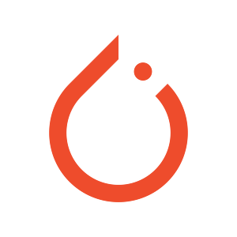
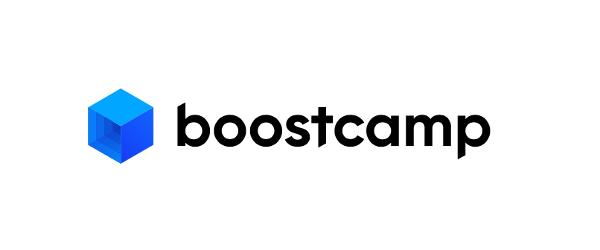

나
컴퓨터 비전 기술을 이해하고 활용하기 위해서는 어떤 전공적인 지식이
필요할까?
심심이
컴퓨터 비전 기술은 AI 기술 중 한 분야로, 다른 기술들에 비해 전공적인
지식을 많이 요구하는 분야입니다. 이에 필요한 전공적인 지식으로는
다양한 영상 처리 기술에 대한 이해와 활용, 영상 인식 알고리즘 및 딥러닝
모델의 이해, 통계 및 확률론, 선형 대수, 최적화 알고리즘, 컴퓨터
그래픽스 등이 있습니다. 또한, 신호 처리, 기계 학습, 패턴 인식, 데이터
분석 등과 같은 관련 분야의 기본 지식도 필요합니다.
나
컴퓨터 비전을 공부하는데 있어서 필수 선행 지식이 무엇일까?
심심이
컴퓨터 비전에서 많이 사용되는 프로그래밍 언어는 Python, C++입니다.
그러므로 대한 기초적인 이해와 경험이 필요합니다.


심심이
이미지나 비디오 데이터를 다루고 분석하기 위해 행렬 및 벡터 연산을
사용하기에 선형 대수, 이미지 처리 및 분석에는 확률 및 통계적인 개념이
사용되므로 수학적 지식도 필요로 합니다.
나
컴퓨터 비전을 직접적으로 공부할려면 어떤 활동을 해야할까?
심심이
OpenCV는 컴퓨터 비전과 영상 처리를 위한 널리 사용되는
라이브러리입니다. 이를 활용하여 이미지 및 비디오 처리, 특징 추출, 객체
검출 등의 작업을 수행하는 경험이 요구될 수 있습니다.

심심이
PyTorch는 딥 러닝 프레임워크 중 하나로, 신경망 모델의 구성, 학습 및
추론을 위한 기능을 제공합니다. 따라서 PyTorch를 사용하여 딥 러닝
모델을 구현하고 학습하는 경험도 취업 지원자에게 많은 가치를 줄 수
있습니다.

심심이
opencv, PyTorch는 취업 지원자격 중 딥 러닝 프레임 워크를 사용 경험을
자주 원합니다. 기초 라이브러리와 프레임워크의 경험을 쌓는 것이
좋습니다.
나
컴퓨터 비전 중 이미지 처리 중심으로 공부하고 싶어졌어! 무슨 기술들이
있는지 소개해줘
심심이
이미지 처리 기술 중 분류 및 인식에 활용되는 다양한 기법 중 하나로는
필터링과 모폴로지 연산이 있습니다. 필터링은 이미지에 특정한 필터를
적용하여 이미지의 특징을 강조하거나 노이즈를 제거하는 등의 작업을
수행합니다. 모폴로지 연산은 이미지의 형태와 구조를 분석하고 처리하는
기법으로, 객체의 형태, 크기, 연결성 등을 파악하거나 이미지의 확장,
축소, 세밀화 등의 조작을 수행합니다.
심심이
필터링과 모폴로지 연산은 컴퓨터 비전 분야에서 이미지 분석, 객체 검출,
세그멘테이션 등에 널리 활용되며, 이를 통해 이미지의 특성을 추출하고
인식하는 데 도움을 줄 수 있습니다.
나
컴퓨터 비전에 관한 공모전이나 인턴십을 찾아줘
심심이
공모전은 국내에서는 컴퓨터 비전 분야의 공모전이 부족한 편이므로
ILSVRC, AI Challenger 등의 국제적인 대회에 도전하는 것이 좋습니다.
다양한 주제로 출전할 수 있는데 현재 특히 관심있어 하시는 인물 감정
분석, 물체 추적 및 인식과 관련된 프로젝트를 진행하시는 것을 원하시니
추천드립니다.
심심이
인턴쉽은 네이버커넥트재단 부스트캠프 AI Tech, 크래프톤 AI 펠로우십 등
AI관련 실무 경험과 교육 과정을 진행해주는 프로그램이 꾸준히 진행되기에
졸업 직후 취업 자리를 마련하지 못했다면 지원하시는 것을 추천드립니다.

나
앞으로의 컴퓨터 비전 취업 준비와 더불어 지속적인 자기 계발을 통해
뛰어난 기술과 창의성을 갖춘 전문가로 성장을 원하며, 컴퓨터 비전 분야의
발전에 기여하고 싶어졌어. 꿈과 열정을 가지고 멈추지 않고 컴퓨터 비전
분야에서 성공을 이끌어 내도록 노력해나갈게! 고마워!